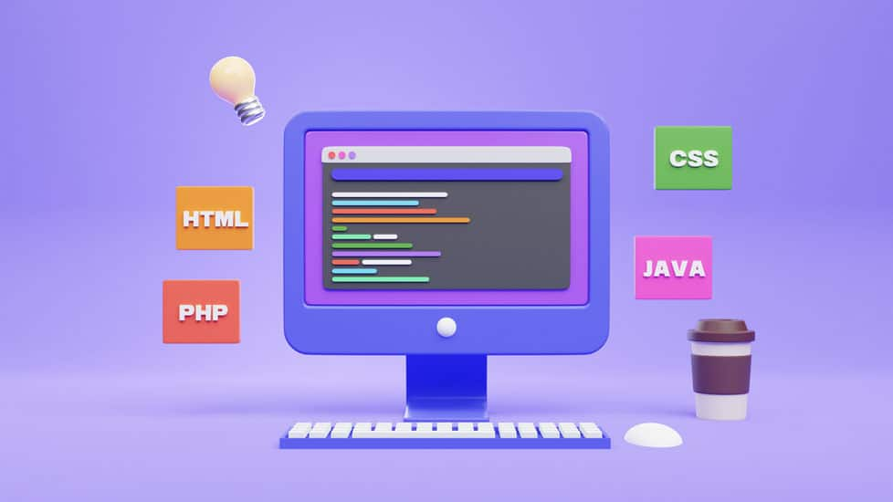

Proyecto 1
EcoTrack: Monitor de Huella de Carbono es un proyecto ideal para practicar lógica de programación. Es una aplicación donde el usuario ingresa sus hábitos diarios (transporte, consumo eléctrico, dieta) y la app calcula el impacto ambiental.
Ver proyecto